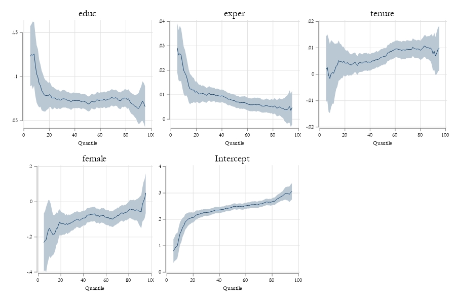
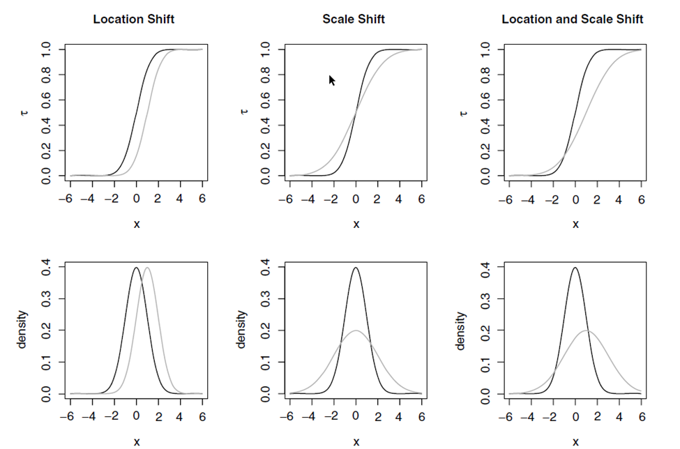

Conditional Quantile Regressions
Because no-one is average
Introduction
Question: What are quantiles? and why do we care??
Quantiles are statistics that have the purpose of providing a better characterization of distributions.
- This is possible, because it provides you with more information than standard summary statistics (means and variance)
How so? In general, there are 3 ways you can use to know “everything” about a distribution.
You either have access to every single \(y_i\)
Or you know the distribution function \(f(y)\) (or probability density function pdf)
Or you know the cumulative distribution function \(F(y)=\int_\infty^y f(t) dt = P(Y\leq y)\)
However, there is an additional way. Quantile:
\[ Q(\theta) = F^{-1}(p) \]
Which in principle, is nothing but the inverse cumulative density function.
\(Q(\theta) = F^{-1}(\theta)\)

Other advantages? Yes!
Quantiles are far more stable in the presence of outliers. Because of this, they are particularly useful as measures of central tendency (perhaps superior to the mean) (ü§î?)
- Simple “test”. In the small town of Troy-NY one of the residents wins the 2B$ lottery. How much has welfare increase for the average resident?
Scaled IQR can be used as an alternative measure of dispersion.
\[ se2 = \frac{Q_{75}-Q_{25}}{1.34898} \]
They are also “function-transformation” resistant: \(exp(Q_{log(y)} (.10)) = Q_y(.10)\)
And are also very easy to estimate:
- Sort data by y \(\rightarrow\) Obtain weighted ranks \(\rightarrow\) choose the lowest value so that \(\theta\) % of the data is less of equal to that number
\[ F^{-1} (tau) = inf(x: F(x)\geq t) \]
This “just” requires obtaining an approximation for \(F(\theta)\), which can be approximated using nonparametric methods!
\[\hat F(x) = \frac{1}{N}\sum (K_F(x,x_i,h)) = \frac{1}{N}\sum 1(x_i<x)\]then we simply “invert” the function for whichever quantile we are interested in.
Statistical Inference
As with the mean, sampling quantiles are measured with sampling error. Thus its important to recognize its sampling distribution.
However, because of the nature of how quantiles are defined, their standard errors are not as intuitive to obtain, although they can be derived using the delta Method. We start from:
\[Q_y(\tau) = F_y^{-1}(\tau) \rightarrow F_y(Q_y(\tau)) = \tau\]
\[ 1 = f_y(Q_y(\tau)) \frac{dQ}{d\tau} \rightarrow \frac{dQ}{d\tau} = \frac{1}{f(Q_y(\tau))} \]
So we have:
\[ \hat Q_y(\tau) - Q_y(\tau) \simeq \frac{1}{f(Q_y(\tau)}(\hat \tau-\tau) \\ Var(\hat Q_y(\tau)) = \frac{Var(\hat \tau - \tau) }{f^2(Q_y(\tau))} = \frac{N^{-1} \tau(1-\tau)}{f^2(Q_y(\tau))} \]
Lets understand this elements
Quantile SE
\[ Var(\hat Q_y(\tau)) = \frac{Var(\hat \tau - \tau) }{f^2(Q_y(\tau))} = \frac{N^{-1} \tau(1-\tau)}{f^2(Q_y(\tau))} \]
the variance of a quantile depends on the distribution of \(\tau\) which is nothing else that the distribution of a Bernoulli experiment: Is \(y\geq Q_y\) or \(y<Q_y\).
- This is the largest near the center of the distribution (50%-50%) but smaller (more precise) near the tails of the distribution (more certainty that something will be larger or smaller.
But also depends on the density of the distribution.
- More precise estimates when the density is high (center), but less precise near tails of the distribution.
And as usual, it depends on the sample size (N) (for more precision one needs more data)
A minor problem. This depends on \(f()\). Unless this is known, is another source of variation! (that we usually ignore
Of course, you also have the alternative method. Bootstrap!
Example
frause wage2, clear
bootstrap q10=r(r1) q25=r(r2) q50=r(r3) q75=r(r4) q90=r(r5), reps(1000): _pctile wage , p(10 25 50 75 90)
Bootstrap results Number of obs = 935
Replications = 1,000
Command: _pctile wage, p(10 25 50 75 90)
------------------------------------------------------------------------------
| Observed Bootstrap Normal-based
| coefficient std. err. z P>|z| [95% conf. interval]
-------------+----------------------------------------------------------------
q10 | 500 8.720396 57.34 0.000 482.9083 517.0917
q25 | 668 14.49296 46.09 0.000 639.5943 696.4057
q50 | 905 14.61303 61.93 0.000 876.359 933.641
q75 | 1160 20.18665 57.46 0.000 1120.435 1199.565
q90 | 1444 33.10919 43.61 0.000 1379.107 1508.893
------------------------------------------------------------------------------
* Analytical
sort wage
gen w1 = _n
gen w0 = _n-1
by wage:gen p=0.5*(w1[_N]+w0[1])/935
kdensity wage, at(wage) gen(fwage)
replace se = sqrt(p*(1-p)/935)/fwage
tabstat wage se if inlist(wage,500,668,905,1160,1444), by(wage)
wage | wage se
---------+--------------------
500 | 500 13.27634
668 | 668 14.78419
905 | 905 14.69217
1160 | 1160 19.3574
1444 | 1444 29.32711
---------+--------------------
Total | 730.7619 15.88035
------------------------------From \(Q_Y\) to \(Q_{Y|X}\)
The previous approaches used to identify a particular quantile are not the only ones.
Just like we can use OLS to estimate Means (Can you prove it?), we could also use a similar method to estimate the median. We only need to change the loss function \(L()\) from an \(L^2\) to a \(|L|\).
Consider this:
\[ median(Y) = min_\mu \frac{1}{N}\sum |y-\mu|=\frac{2}{N}\sum (y-u)(0.5-I([y-u]<0) \]

Q and Loss functions
Why does it matter?
The loss function for Quantiles does not penalize “errors” as much as \(L^2\) does. This is why its more robust to outliers (almost not affected by them). (the R2 will also need to be changed)
However, the loss function is no longer differentiable (is discontinuous). So requires other methods to find the solution. Even tho it may not look like that:

From B to XB
Koenker and Bassett (1978) extended this last approximation in two ways:
Allows for Covariates (\(X's\)) variation
Allows to identify other quantiles in the distribution:
\[ \beta(\tau) = \underset {b}{min} \ N^{-1} \sum \rho_\tau(y_i-X_i'b) \\ \rho_\tau (u) = u (\tau-I(u<0)) \]
This implicitly states that you want to find a combination of \(X's\) such that \(\tau\) proportion of \(y_i\) are lower than the \(X_i'\beta(\tau)\) .
- But because we are using controls, we also need that, conditional on \(x^c\), \(\tau\)% is lower than \(x'^{c}\beta\)
\[ Q_{Y|X}(\tau) = \beta_0(\tau) + \beta_1(\tau)x_1 +...+ \beta_k(\tau)x_k \]
Interpretation: Why is it so different from OLS?
- In Rios-Avila and Maroto(2022?) we stress that OLS can be interpreted at different “levels”. So consider the following:
\[y_i = b_0 + b_1 x_1 + b_2 x_2 + e \] If there errors are exogenous, and there is no heteroskedasticty, you can “obtain” marginal effects at many levels:
\[ \begin{align} Ind &: \frac{dy_i}{dx_{1i}}=b_1 \\ Cond &: E(y_i|X=x)=b_0 + b_1 x_1 + b_2 x_2 \\ &: \frac{dE(y|x)}{dx_1} =b_1 \\ Ucond &: E(y_i) = b_0 + b_1 E(x_1) + b_2 E(x_2) \\ &: \frac{dE(y)}{dE(x_1)} =b_1 \end{align} \] - So in OLS, assuming a linear model in parameters, Nothing changes. The effect is the same! (although magnitude of the “experiment” changes)
But CQreg?
For quantile regressions, things are not that simple.
There is no “individual” level quantile effect, because we do not observe individual ranks \(\tau\) . If we could observe them, and we assume they are fixed, then one can obtain individual level effects.
Because \(\tau\) is unobserved, all Qregression coefficients, should be interpreted as effects on Conditional Distributions (thus the name CQREG).
- In other words, effects are just expected changes in some points in the distribution.
You cannot use it for unconditional effects either (not easily), because
\[ E(Q_{Y|X}(\tau)) \neq Q_Y(\tau) \]
and you cannot “simply” average the CQREG effects to get unconditional.
But what does it mean? This means that CQREG interpretation are percentile \(\tau\) and covariate \(X\) specific. But that is not all:
- Fixed rank. If you happen to be on the top of the distribution (and stay there), the quantile effect is given by the \(\beta(\tau)\)
- Changes in Conditional distributions: What we see are how distribution changes along characteristics
So this must be kept in mind, whenever one interpret results
Example: Wages…
frause oaxaca, clear
qreg lnwage educ exper tenure female, nolog q(10)
est sto m1
qreg lnwage educ exper tenure female, nolog q(50)
est sto m2
qreg lnwage educ exper tenure female, nolog q(90)
est sto m3
* ssc install estout
esttab m1 m2 m3, nogaps mtitle(q10 q50 q90)
------------------------------------------------------------
(1) (2) (3)
q10 q50 q90
------------------------------------------------------------
educ 0.103*** 0.0694*** 0.0639***
(6.21) (16.03) (7.09)
exper 0.0200*** 0.00758*** 0.00402
(4.06) (5.91) (1.50)
tenure 0.000669 0.00657*** 0.00774*
(0.11) (4.19) (2.37)
female -0.151 -0.0689** -0.0543
(-1.87) (-3.29) (-1.24)
_cons 1.462*** 2.474*** 2.984***
(6.67) (43.36) (25.10)
------------------------------------------------------------
N 1434 1434 1434
------------------------------------------------------------
t statistics in parentheses
* p<0.05, ** p<0.01, *** p<0.001
** Also
** ssc install qregplot
qregplot educ exper tenure female, cons q(5/95)Example: Wages…
Other Interpretations of Qreg
Random coefficents
One approach to both understanding, and simulating QREG is by also understanding the intuition behind the data generating process.
\[ y = b_0(\tau)+b_1(\tau)x_1 + +b_2(\tau)x_2+...+b_k(\tau) x_k \\ \tau \sim runiform(0,1) \]
where all coefficients are some function (preferably monotonically increasing or decreasing) of \(\tau\) .
We want them to be monotonically increasing or decreasing because we want that
\[X B(\tau_1 ) \geq X B(\tau_2 ) \ if \ \tau_1 > \tau_2\]
This specification suggest that the unobserved component \(\tau\) is a random indicator a kind to luck. If you are lucky and get a high \(\tau\) then you will have better outcomes than anyone of your peers.
Also notice that this setup assumes that \(\tau\) is the only random factor, and should be uncorrelated with \(X\) (you do not make your luck!)
Can you create data with these characteristics?
SVC model with a latent running variable
Another way you can think of Qreg is to align it to the -semiparametric- method we introduced ealier. SVC model.
The difference here is that the running variable is unknown. Given the outcome, and characteristics, however, we can identify something akin to the presence of a “latent” component. (but not really estimating it).
There are a few (recent) papers that focus on estimation and identification of these models. The general intuition is that the qreg model is identified by the following moment condition:
\[ E\Big( 1[x\beta(\tau) - y > 0 ] - \tau \Big) = 0 \]
but substitute the indicator function with a smooth function. CDF
\[ E\Big( F(x\beta(\tau) - y) - \tau \Big) = 0 \]
Being differentiable, this problem is relatively easier to solve (given good initial values)
Example

Scale and Location Model
Another approach that can be used to understand Quantile regressions (and elaborate the interpretation) is to assume that the coefficients are in fact capturing two components:
\[ y = Xb + Xg(\tau) \]
Location: which indicates what is the average relationship between X and Y. \({b}\)
Scale: which indicates how far one could be from the average effect, given a relative to its position \(g(\tau)\)
The model Still assumes random coefficients
Estimation of this model is not standard. But can be manually implemented:
- Estimate OLS and get residuals
- Estimate QREG using those residuals
Requires additional care for the estimation of SE, or just bootstrap
Scale and Location 2: Heteroskedasticity
A second approach that is useful to understand and interpret CQreg is to consider a parametric version of the LS model:
\[y = Xb + \gamma (X) * e \]
Where we assume \(\gamma(X)>0\) . which directly shows the relationship between a quantile regressions and heteroskedasticity in the error term. (typically model as \(X\gamma\))
Because Heteroskedasticity is parametric, it constrains the relationship across all quantile coefficients:
\[ y = X(b+\gamma F^{-1}(\tau)) \rightarrow b(\tau)=b+\gamma(\tau) \]
Making it more efficient, albeit imposing constrains of the relationship.
It shows more clearly the nature of the overall inequality increasing or decreasing effect.
Visual Loc vs Scale
Visual Loc vs Scale

Estimation and Statistical Inference
As hinted previously, there are many approaches that can be used for the estimation of Conditional Quantile regressions.
- Stata:
qreg,sqreg,bsqreg,qreg2,qrprocess,mmqreg,smqreg,sivqr
Each one with its own assumptions. For Standard errors, however, there are 3 options. Under the assumption of iid error. Non iid error (robust), and assuming clustered standard errors.
\[ iid: \Sigma_\beta=\frac{\tau(1-\tau)}{f^2_y(F^{-1}(\tau))}(X'X)^{-1} \\\ niid: \Sigma_\beta = \tau(1-\tau) (X'f(0|x)X)^{-1} \ (X'X) \ (X'f(0|x)X)^{-1} \\\ alt: \Sigma_\beta = (IF_\beta \ ' IF_\beta) N^{-2} \]
Or simply Bootstrap
Problems and Considerations
- Unless otherwise specified, quantile regressions are linear in variables (and parameters?)
- With few exceptions, quantile regressions are quantile specific. Comparisons across quantiles require joint estimation (to construct VCV matrix)
- Because they are “local” estimators, there is risk of crossing quantiles. (Violation of Monotonicity)
- Non-linear effects will be present if either the location or scale components are nonlinear.
- Quantile regressions are very sensitive to measurement errors in both dependent and independent variables
- They can be difficult to interpret (see references)
Next topic…Unconditional Quantiles
Unconditional Quantile Regressions and RIF-Regressions